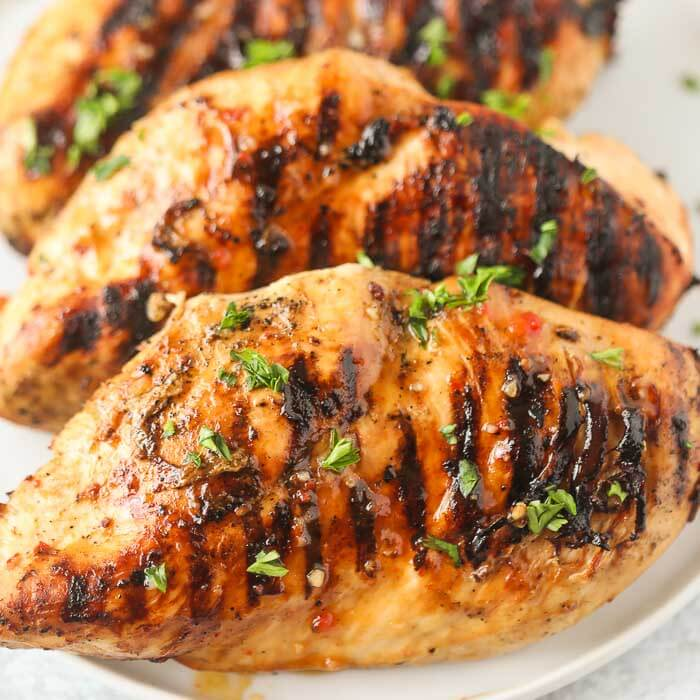
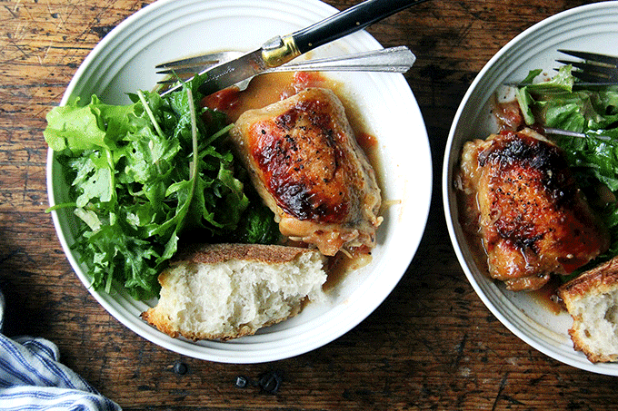

Italian Chicken Marinade

What you're getting yourself into:
This Italian dressing chicken marinade is a super simple but delicious way to add flavor before grilling.
Prep Information
- Prep Time: 15 min
- Cook Time: 15 min
Ingredients
- 1 (16 ounce) bottle Italian-style salad dressing
- 1 teaspoon garlic powder
- 1 teaspoon salt
- 4 skinless, boneless chicken breast halves
Directions
Step 1: Whisk salad dressing, garlic powder, and salt together in a shallow baking dish; add chicken breasts and turn to coat. Cover the dish with plastic wrap and marinate in the refrigerator, 4 hours to overnight.
Step 2: Preheat an outdoor grill for high heat and lightly oil the grate.
Step 3: Remove chicken from marinade and shake off excess; discard remaining marinade.
Step 4: Cook chicken on the preheated grill until no longer pink in the center and the juices run clear, about 7 to 8 minutes on each side. An instant-read thermometer inserted into the center should read at least 165 degrees F (74 degrees C).
Once you're finished it's all MMM.
